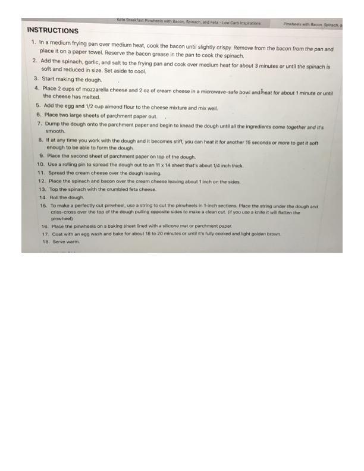

Keto Breakfast Pinwheels with Bacon, Spinach, and Feta

Original cookbook page 83
Cook: 18-20 minutes
Ingredients
Instructions
- In a medium frying pan over medium heat, cook the bacon until slightly crispy. Remove from the pan and place it on a paper towel. Reserve the bacon grease in the pan to cook the spinach.
- Add the spinach, garlic, and salt to the frying pan and cook over medium heat for about 3 minutes or until the spinach is soft and reduced in size. Set aside to cool.
- Start making the dough.
- Place 2 cups of mozzarella cheese and 2 oz of cream cheese in a microwave-safe bowl and heat for about 1 minute or until the cheese has melted.
- Add the egg and 1/2 cup almond flour to the cheese mixture and mix well.
- Place two large sheets of parchment paper out.
- Dump the dough onto the parchment paper and begin to knead the dough until all the ingredients come together and it's smooth.
- If at any time you work with the dough and it becomes stiff, you can heat it for another 15 seconds or more to get it soft enough to be able to form the dough.
- Place the second sheet of parchment paper on top of the dough.
- Use a rolling pin to spread the dough out to an 11 x 14 sheet that's about 1/4 inch thick.
- Spread the cream cheese over the dough leaving.
- Place the spinach and bacon over the cream cheese leaving about 1 inch on the sides.
- Top the spinach with the crumbled feta cheese.
- Roll the dough.
- To make a perfectly cut pinwheel, use a string to cut the pinwheels in 1-inch sections. Place the string under the dough and criss-cross over the top of the dough pulling opposite sides to make a clean cut. (If you use a knife it will flatten the pinwheel)
- Place the pinwheels on a baking sheet lined with a silicone mat or parchment paper.
- Coat with an egg wash and bake for about 18 to 20 minutes or until it's fully cooked and light golden brown.
- Serve warm.
Recipe #83 from collection